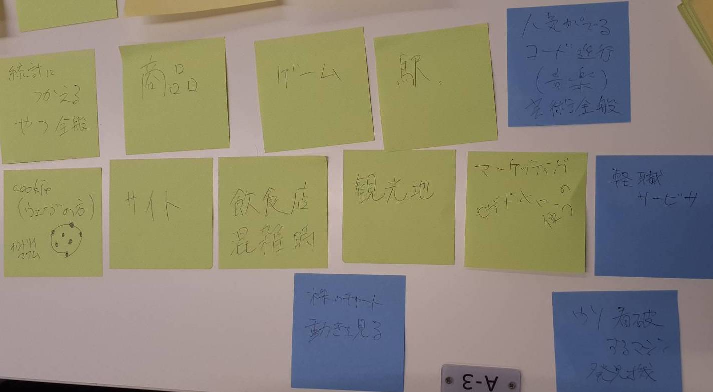
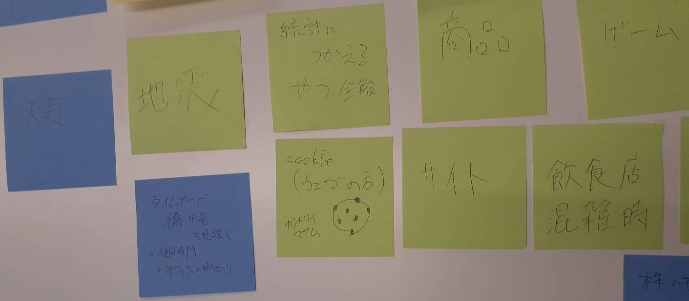
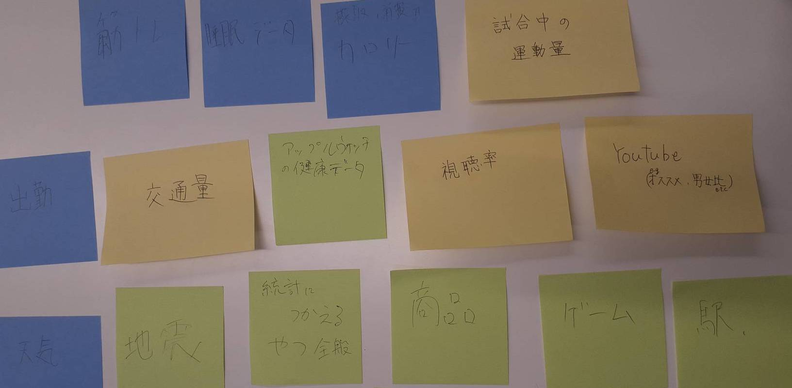

暗くなると光るArduinoコード
- const int analogPin = A1; // アナログ入力ピン
- const int ledPin = 13; // LEDを接続するピン
- void setup() {
- pinMode(ledPin, OUTPUT); // LEDピンを出力に設定
- Serial.begin(9600); // シリアル通信を開始
- }
- void loop() {
- int sensorValue = analogRead(analogPin); // アナログ入力から値を読み取る
- Serial.println(sensorValue); // 値をシリアルモニタに出力
- if (sensorValue > 300) { // もしセンサーの値が. より大きければ
- digitalWrite(ledPin, HIGH); // LEDを点灯
- } else {
- digitalWrite(ledPin, LOW); // それ以外はLEDを消灯
- }
- delay(1000); // 1000ミリ秒待つ
- }
YouTubeリンク: https://youtu.be/MhIdzlbPBPU
データをグラフにする
arduino→arduinoのソフト→python→サーバー
の順でデータを流していく。
ArduinoUNOのコード
- void setup() {
- // put your setup code here, to run once:
- Serial.begin(9600);
- }
- void loop() {
- // put your main code here, to run repeatedly:
- int val=0;
- val=analogRead(1);
- Serial.println(val);
- delay(5000);//5000ms=5秒 ごとに送信。【注意】サーバーに負荷がかかるので5000より小さい値は設定しないでください。
- //実装する際は可能な限り大きな数字にしてください。
- }
pythonのコード
- import dfLink
- #端末設定---------------------
- #端末keyを指定してください。
- #(これを間違えると認証されていないユーザー扱いになる。)
- pkey='自分の認証キー'
- #-------------------------------------------
- #シリアルポートを入力-------------------------
- serial_port='シリアルポート'
- #-------------------------------------------
- #Arduinoとのシリアル通信設定-------------------
- my_arduino = dfLink.set_serial(serial_port,9600)
- #-------------------------------------------
- #while Trueは無限ループ#----------------------
- while True:
- # Arduinoからreadlineコマンドでデータを取得し、data_from_arduinoという変数に格納
- data_from_arduino=my_arduino.readline()
- #stripコマンドで、data_from_arduinoの中の余計な文字を削除
- #さらにintで文字で送られてきたデータをint型に変換
- data=int(data_from_arduino.strip())
- print(data)
- # データの設定--------------------------------
- int_data = data #Arduinoから受け取った値をここでint_dataにいれる
- float_data = ""
- txt_data = ""
- # -------------------------------------------
- # データの送信---------------------------------
- # 整数データ:int_data
- # 実数データ(小数を含むデータ):float_data
- # テキストデータ:txt_data
- ret = dfLink.sendData_To_dfLink(int_data=int_data,float_data=float_data,text_data=txt_data,pkey=pkey)
- print(ret)
- # -------------------------------------------
- #-------------------------------------------
貯める価値があるデータとは？グループワーク


